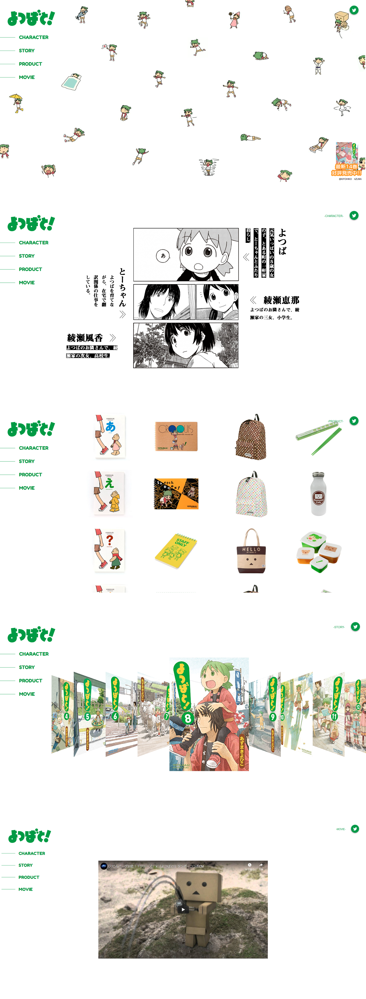

KENTAROU
SUZUKI
©KENTAROU SUZUKI


"よつばと！リニューアルサイト"
website
Role : design / coding
Soft : Photoshop, Illustrator , Dreamweaver
既存のサイトをリニューアルする課題として「よつばと！」のwebサイトのリニューアルに取り組みました。
サイトの問題点として、サイトが複数存在している、サイトとしての要素が薄いといった分析をしました。改善策としてサイトの情報量を集約しました。デザインは、漫画の雰囲気が伝わるようなデザインに統一しました。